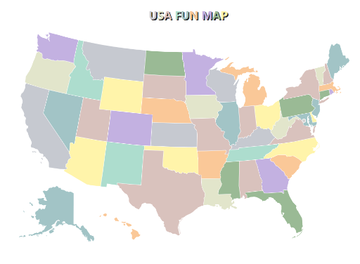

USA Fun Map
An interactive map designed to make learning about US states engaging and informative.

Role
As a front-end developer, I collaborated closely...
Challenges
- Adapted project scope due to time constraints...
- Modified approach to comply with web scraping restrictions...
- Implemented Django for data management...
- Redirected focus to integrate Wikipedia-sourced data for state statistics.